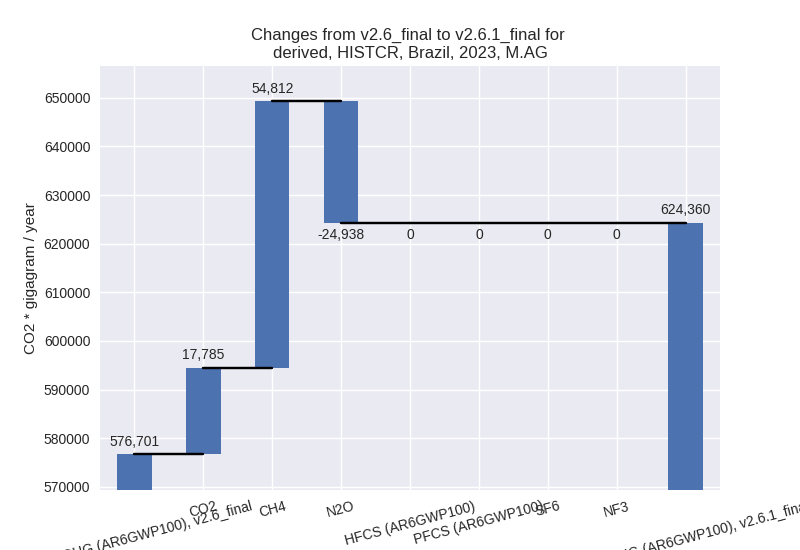

Change analysis for Brazil for PRIMAP-hist v2.6.1_final compared to
v2.6_final
Overview over
emissions by sector and gas
The following figures show the aggregate national total emissions
excluding LULUCF AR6GWP100 for the country reported priority scenario.
The dotted linesshow the v2.6_final data.
The following figures show the aggregate national total emissions
excluding LULUCF AR6GWP100 for the third party priority scenario. The
dotted linesshow the v2.6_final data.
Overview over changes
In the country reported priority scenario we have the following
changes for aggregate Kyoto GHG and national total emissions excluding
LULUCF (M.0.EL):
- Emissions in 2023 have changed by 4.5%% (53870.80 Gg CO2 / year)
- Emissions in 1990-2023 have changed by 6.1%% (57536.78 Gg CO2 / year)
In the third party priority scenario we have the following changes
for aggregate Kyoto GHG and national total emissions excluding LULUCF
(M.0.EL):
- Emissions in 2023 have changed by -3.7%% (-48518.00 Gg CO2 / year)
- Emissions in 1990-2023 have changed by -3.9%% (-41117.26 Gg CO2 / year)
Most
important changes per scenario and time frame
In the country reported priority scenario the
following sector-gas combinations have the highest absolute impact on
national total KyotoGHG (AR6GWP100) emissions in 2023
(top 5):
- 1: 3.A, CH4 with 61494.50 Gg CO2 / year (16.9%)
- 2: M.AG.ELV, N2O with -22485.81 Gg CO2 / year (-12.8%)
- 3: M.AG.ELV, CO2 with 17785.10 Gg CO2 / year (124.3%)
- 4: 2, CO2 with 10310.64 Gg CO2 / year (12.8%)
- 5: 1.B.2, CO2 with 9945.84 Gg CO2 / year (80.9%)
In the country reported priority scenario the
following sector-gas combinations have the highest absolute impact on
national total KyotoGHG (AR6GWP100) emissions in
1990-2023 (top 5):
- 1: 3.A, CH4 with 56121.92 Gg CO2 / year (18.3%)
- 2: M.AG.ELV, CO2 with 8839.97 Gg CO2 / year (134.2%)
- 3: M.AG.ELV, N2O with -5656.19 Gg CO2 / year (-4.8%)
- 4: M.AG.ELV, CH4 with -5297.16 Gg CO2 / year (-31.0%)
- 5: 2, CO2 with 4369.24 Gg CO2 / year (6.2%)
In the third party priority scenario the following
sector-gas combinations have the highest absolute impact on national
total KyotoGHG (AR6GWP100) emissions in 2023 (top
5):
- 1: 4, CH4 with -38090.80 Gg CO2 / year (-23.5%)
- 2: 1.B.2, CH4 with -9450.63 Gg CO2 / year (-35.3%)
- 3: 3.A, CH4 with 6369.24 Gg CO2 / year (1.7%)
- 4: M.AG.ELV, N2O with -5256.06 Gg CO2 / year (-3.0%)
- 5: M.AG.ELV, CH4 with -1834.51 Gg CO2 / year (-16.6%)
In the third party priority scenario the following
sector-gas combinations have the highest absolute impact on national
total KyotoGHG (AR6GWP100) emissions in 1990-2023 (top
5):
- 1: 4, CH4 with -32025.77 Gg CO2 / year (-25.1%)
- 2: 1.B.2, CH4 with -6141.22 Gg CO2 / year (-36.9%)
- 3: 2, CO2 with -3332.46 Gg CO2 / year (-8.9%)
- 4: 3.A, CH4 with 600.56 Gg CO2 / year (0.2%)
- 5: M.AG.ELV, N2O with -243.63 Gg CO2 / year (-0.2%)
Notes on data changes
Here we list notes explaining important emissions changes for the
country.
- CRT data from BTR1 has been included. It covers 1990-2022 and
replaces DI data which is likely from BUR4. The new data covers a longer
time period and thus replaced extrapolation with third party data.
- The highest impact of the new data on 2023 and cumulative emissions
is from the agricultural sectors and CO2 in 1.B.2 and 2.B
- Changes in the TP time-series are smaller and come from EDGAR (waste
and fugitive CH4) and FAOSTAT data (agriculture). Cumulative changes in
the agricultural sectors are small in the TP time-series.
Changes by sector and gas
For each scenario and time frame the changes are displayed for all
individual sectors and all individual gases. In the sector plot we use
aggregate Kyoto GHGs in AR6GWP100. In the gas plot we usenational total
emissions without LULUCF.
country reported scenario
2023
1990-2023
third party scenario
2023
1990-2023
Detailed changes for the
scenarios:
country reported scenario
(HISTCR):
Most important changes
per time frame
For 2023 the following sector-gas combinations have
the highest absolute impact on national total KyotoGHG (AR6GWP100)
emissions in 2023 (top 5):
- 1: 3.A, CH4 with 61494.50 Gg CO2 / year (16.9%)
- 2: M.AG.ELV, N2O with -22485.81 Gg CO2 / year (-12.8%)
- 3: M.AG.ELV, CO2 with 17785.10 Gg CO2 / year (124.3%)
- 4: 2, CO2 with 10310.64 Gg CO2 / year (12.8%)
- 5: 1.B.2, CO2 with 9945.84 Gg CO2 / year (80.9%)
For 1990-2023 the following sector-gas combinations
have the highest absolute impact on national total KyotoGHG (AR6GWP100)
emissions in 1990-2023 (top 5):
- 1: 3.A, CH4 with 56121.92 Gg CO2 / year (18.3%)
- 2: M.AG.ELV, CO2 with 8839.97 Gg CO2 / year (134.2%)
- 3: M.AG.ELV, N2O with -5656.19 Gg CO2 / year (-4.8%)
- 4: M.AG.ELV, CH4 with -5297.16 Gg CO2 / year (-31.0%)
- 5: 2, CO2 with 4369.24 Gg CO2 / year (6.2%)
Changes in the main sectors for aggregate KyotoGHG (AR6GWP100)
are
- 1: Total sectoral emissions in 2022 are 418665.93
Gg CO2 / year which is 33.7% of M.0.EL emissions. 2023 Emissions have
changed by 0.7% (2962.68 Gg CO2 /
year). 1990-2023 Emissions have changed by 1.0% (3337.18 Gg CO2 / year).
- 2: Total sectoral emissions in 2022 are 104137.84
Gg CO2 / year which is 8.4% of M.0.EL emissions. 2023 Emissions have
changed by 2.8% (2784.80 Gg CO2 /
year). 1990-2023 Emissions have changed by 1.4% (1186.48 Gg CO2 / year). For 2023 the
changes per gas
are:
- M.AG: Total sectoral emissions in 2022 are
624949.22 Gg CO2 / year which is 50.2% of M.0.EL emissions. 2023
Emissions have changed by 8.3%
(47659.35 Gg CO2 / year). 1990-2023 Emissions have changed by 11.5% (52071.52 Gg CO2 / year). For 2023
the changes per gas
are:

For 1990-2023 the changes per gas
are:
The changes come from the following subsectors:
- 3.A: Total sectoral emissions in 2022 are 429454.34
Gg CO2 / year which is 68.7% of category M.AG emissions. 2023 Emissions
have changed by 16.0% (59042.51 Gg
CO2 / year). 1990-2023 Emissions have changed by 17.4% (54184.90 Gg CO2 / year). For 2023
the changes per gas
are:
For 1990-2023 the changes per gas
are:
There is no subsector information available in PRIMAP-hist.
- M.AG.ELV: Total sectoral emissions in 2022 are
195494.89 Gg CO2 / year which is 31.3% of category M.AG emissions. 2023
Emissions have changed by -5.5%
(-11383.16 Gg CO2 / year). 1990-2023 Emissions have changed by -1.5% (-2113.38 Gg CO2 / year). For 2023
the changes per gas
are:
There is no subsector information available in PRIMAP-hist.
- 4: Total sectoral emissions in 2022 are 90523.93 Gg
CO2 / year which is 7.3% of M.0.EL emissions. 2023 Emissions have
changed by 1.6% (1392.86 Gg CO2 /
year). 1990-2023 Emissions have changed by 1.6% (1030.12 Gg CO2 / year).
- 5: Total sectoral emissions in 2022 are 5648.70 Gg
CO2 / year which is 0.5% of M.0.EL emissions. 2023 Emissions have
changed by -14.8% (-928.93 Gg CO2 /
year). 1990-2023 Emissions have changed by -1.6% (-88.52 Gg CO2 / year). For 2023 the
changes per gas
are:
third party scenario (HISTTP):
Most important changes
per time frame
For 2023 the following sector-gas combinations have
the highest absolute impact on national total KyotoGHG (AR6GWP100)
emissions in 2023 (top 5):
- 1: 4, CH4 with -38090.80 Gg CO2 / year (-23.5%)
- 2: 1.B.2, CH4 with -9450.63 Gg CO2 / year (-35.3%)
- 3: 3.A, CH4 with 6369.24 Gg CO2 / year (1.7%)
- 4: M.AG.ELV, N2O with -5256.06 Gg CO2 / year (-3.0%)
- 5: M.AG.ELV, CH4 with -1834.51 Gg CO2 / year (-16.6%)
For 1990-2023 the following sector-gas combinations
have the highest absolute impact on national total KyotoGHG (AR6GWP100)
emissions in 1990-2023 (top 5):
- 1: 4, CH4 with -32025.77 Gg CO2 / year (-25.1%)
- 2: 1.B.2, CH4 with -6141.22 Gg CO2 / year (-36.9%)
- 3: 2, CO2 with -3332.46 Gg CO2 / year (-8.9%)
- 4: 3.A, CH4 with 600.56 Gg CO2 / year (0.2%)
- 5: M.AG.ELV, N2O with -243.63 Gg CO2 / year (-0.2%)
Changes in the main sectors for aggregate KyotoGHG (AR6GWP100)
are
- 1: Total sectoral emissions in 2022 are 472419.77
Gg CO2 / year which is 37.5% of M.0.EL emissions. 2023 Emissions have
changed by -1.7% (-8233.26 Gg CO2 /
year). 1990-2023 Emissions have changed by -1.5% (-5763.60 Gg CO2 / year).
- 2: Total sectoral emissions in 2022 are 61833.56 Gg
CO2 / year which is 4.9% of M.0.EL emissions. 2023 Emissions have
changed by 0.6% (403.49 Gg CO2 /
year). 1990-2023 Emissions have changed by -7.1% (-3477.63 Gg CO2 / year). For
1990-2023 the changes per gas
are:
- M.AG: Total sectoral emissions in 2022 are
590815.67 Gg CO2 / year which is 47.0% of M.0.EL emissions. 2023
Emissions have changed by -0.3%
(-1734.56 Gg CO2 / year). 1990-2023 Emissions have changed by 0.0% (232.83 Gg CO2 / year).
- 4: Total sectoral emissions in 2022 are 127624.75
Gg CO2 / year which is 10.1% of M.0.EL emissions. 2023 Emissions have
changed by -22.9% (-38024.66 Gg CO2
/ year). 1990-2023 Emissions have changed by -24.5% (-32020.35 Gg CO2 / year). For 2023
the changes per gas
are:
For 1990-2023 the changes per gas
are:
- 5: Total sectoral emissions in 2022 are 5648.70 Gg
CO2 / year which is 0.4% of M.0.EL emissions. 2023 Emissions have
changed by -14.8% (-928.93 Gg CO2 /
year). 1990-2023 Emissions have changed by -1.6% (-88.52 Gg CO2 / year). For 2023 the
changes per gas
are: